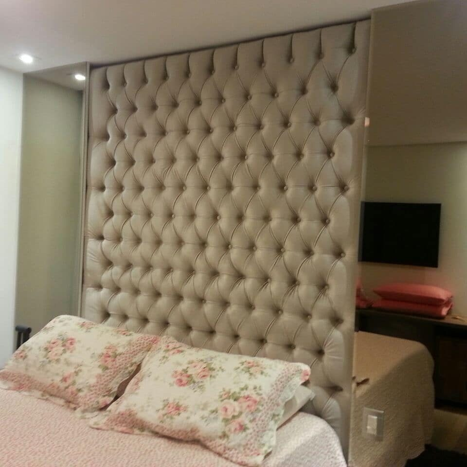

Serviço
Cabeceiras sob medida
Cabeceiras com volume, costura e acabamento alinhados ao projeto do quarto — do clássico ao contemporâneo.
Criamos cabeceiras sob medida em São Paulo com volume, costuras e acabamento alinhados ao projeto do quarto — do clássico ao contemporâneo. Medidas reais do espaço, tecido escolhido com você e fabricação no ateliê.
Trabalhamos capitonê, canaletado, painéis do piso ao teto e soluções que resolvem vigas, iluminação embutida e integração com marcenaria. Ideal para residências e condomínios de alto padrão.
Quando pedir sob medida
Quando a parede tem medidas especiais, o projeto pede continuidade visual, há necessidade de esconder irregularidades ou você quer uma peça única — não um modelo de prateleira.
Como funciona
- Medição — espaço, altura, obstáculos e linguagem do projeto.
- Desenho — tipologia, espessura, tecido e detalhes.
- Fabricação — estrutura e estofado no ateliê.
- Instalação — fixação segura e alinhamento final.
Perguntas frequentes
A cabeceira é feita sob medida?
Sim. Fabricamos conforme as medidas reais do quarto e o desenho combinado no projeto.
Dá para esconder viga ou irregularidade na parede?
Em muitos casos, sim — com volume e composição que absorvem o obstáculo sem parecer improviso.
Quais estilos vocês fazem?
Capitonê, canaletado, geométrico, painéis altos e combinações com iluminação, conforme o briefing.
Qual o prazo?
Varia com complexidade e fila de produção. Informamos a estimativa no orçamento.
Conte o desafio do seu projeto — do conserto pontual à peça sob encomenda. Envie fotos e receba orientação pelo WhatsApp.
Pedir orçamento no WhatsApp